Префектура Хоккайдо · Токати · путешествие на кемпере
Moving Inn: гостиничный номер на колёсах и равнины Токати в полном вашем распоряжении
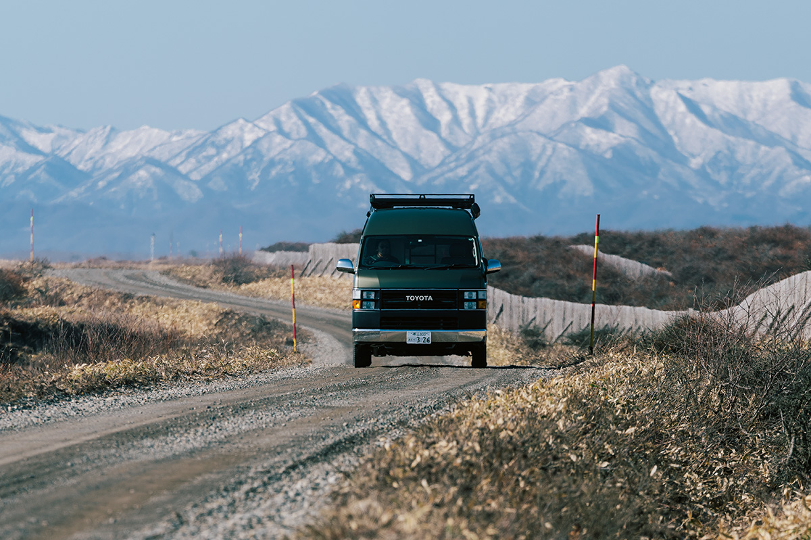
Бескрайняя равнина Токати, закат над Тихим океаном, хребет Хидака на западе: Хоккайдо будто создан для путешествий на машине. Компания Moving Inn превратила микроавтобус в гостиничный номер, и с ним лучшим местом для работы и ночлега становится то, которое вы выбрали сегодня сами.
Идея
Отель, который едет за лучшим видом
Что такое идеальное путешествие? Почти каждый ответит, что хочет увидеть самые красивые места. Но красота зависит от сезона, погоды и часа: сегодня лучший вид открывается в одном месте, завтра в другом. Как было бы хорошо следовать за ним, а то место, которое вы выбрали на сегодня, сделать и рабочим кабинетом, и площадкой для отдыха, и спальней.
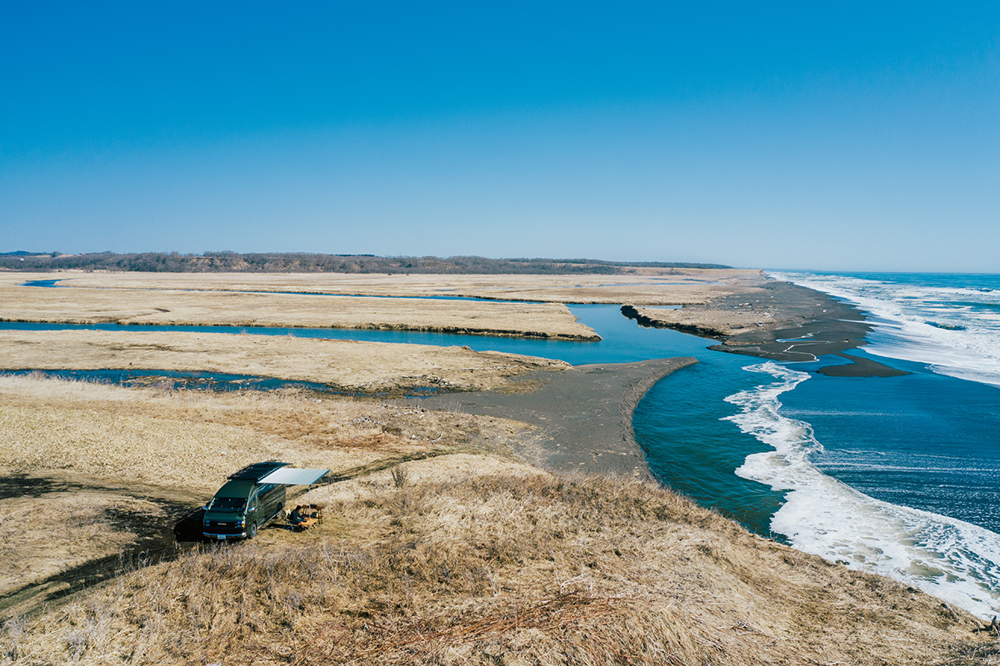
Такие поездки предлагает Moving Inn, компания с базой в Токати, на востоке Хоккайдо. Её основали в апреле 2018 года две фирмы: FLEX, которая переделывает и продаёт «Лэнд Крузеры» и «Хайэйсы», и Orange and Partners, проектная компания под руководством известного телесценариста.
Наш провожатый, продюсер Moving Inn, путешествует на оливково-зелёной «Хайэйс LX». Этот цвет хорошо вписывается в пейзаж ранней весны, когда с полей сходит снег. Модель считается флагманом компании: в ней удобство гостиничного номера соединено со свободой кемпера.
«В обычный автодом стараются уместить туалет, душ и всё остальное, и в тесном пространстве каждая вещь работает хуже, чем могла бы. Мы оставили только самое нужное, а главным сделали спальню, как в курортном отеле»
продюсер Moving Inn
«Хайэйс» часто рассчитывают на четверых, но здесь машину сознательно сделали двухместной, чтобы пространство осталось просторным.
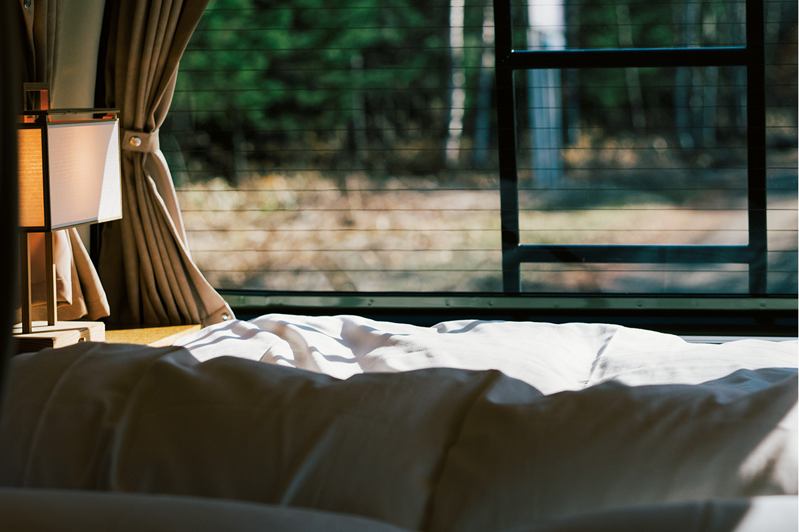
Салон отделан массивом дерева, и от этого в нём особенно тепло. За дверцей шкафа прячется холодильник: дополнительный аккумулятор держит его включённым, даже когда двигатель заглушён. Есть и автономный отопитель, так что в сильные морозы Токати внутри остаётся комфортно.
В ясный солнечный день, которым славится Токати, можно раскрыть боковую маркизу и работать прямо на воздухе. Если положить на багажник на крыше гамак или спальный мешок, нежные краски заката над горами Хидака и ночное небо с Млечным Путём достанутся только вам. Хоккайдо огромен, и на такой машине весь остров становится рабочим пространством. А если есть время, можно доехать и до Хонсю.
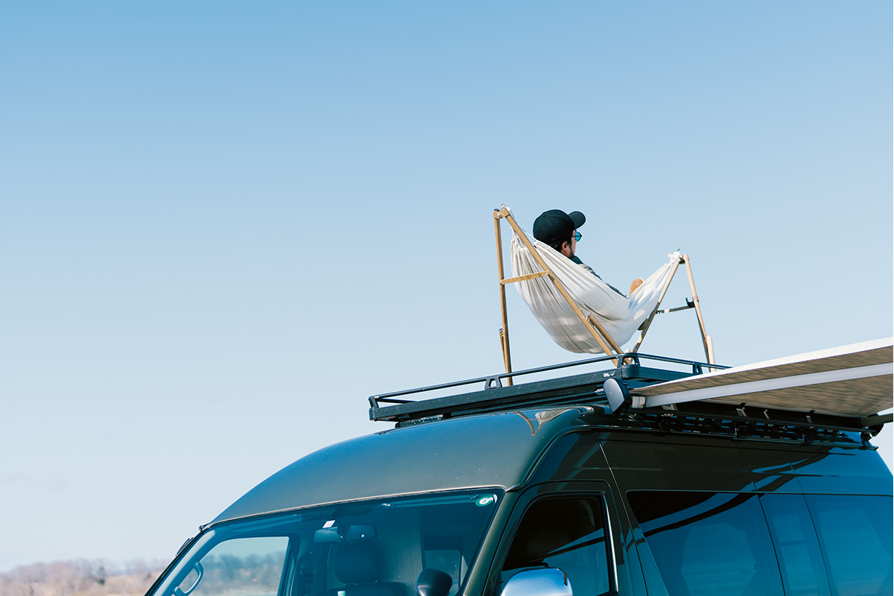
В 2021 году действовал и рабочий тариф на 30 дней за 330 000 иен без питания, с карманным Wi-Fi, аккумулятором, столом и стульями. Обычная аренда «Хайэйс LX» стоила тогда от 38 500 иен за ночь без питания.
Moving Inn, офис в Обихиро
- Телефон
- +81 155-67-6257
- Цены / Вход
- от 38 500 иен за ночь без питания, на двоих (модель «Хайэйс LX»), только предоплата
- Номера
- машина на 2 человека; есть модели на 2–4 человека (по запросу)
- Сайт
- moving-inn.com
Ремесло
page: медведи и горы из дерева
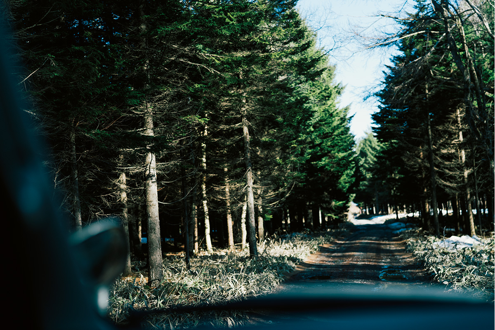
Первая остановка в окрестностях посёлка Сикаой, на севере Токати. Здесь, на месте бывшего коровника, стоит мастерская page: в ней работают супруги, резчик по дереву и мастер ювелирных колец.
Резчик раньше работал в осакской дизайнерской компании graf, но решил изменить образ жизни и вернулся на Хоккайдо, где родился и вырос. Сначала он делал в основном мебель, однако его так увлекла одна из стадий работы, резьба, что он начал вырезать деревянных медведей. Одни фигуры абстрактные, с открытыми плоскостями среза, у других шерсть проработана до волоска. Позже появились горы: он вырезает хребет Хидака, который видит из окна, и эти работы стали его визитной карточкой.
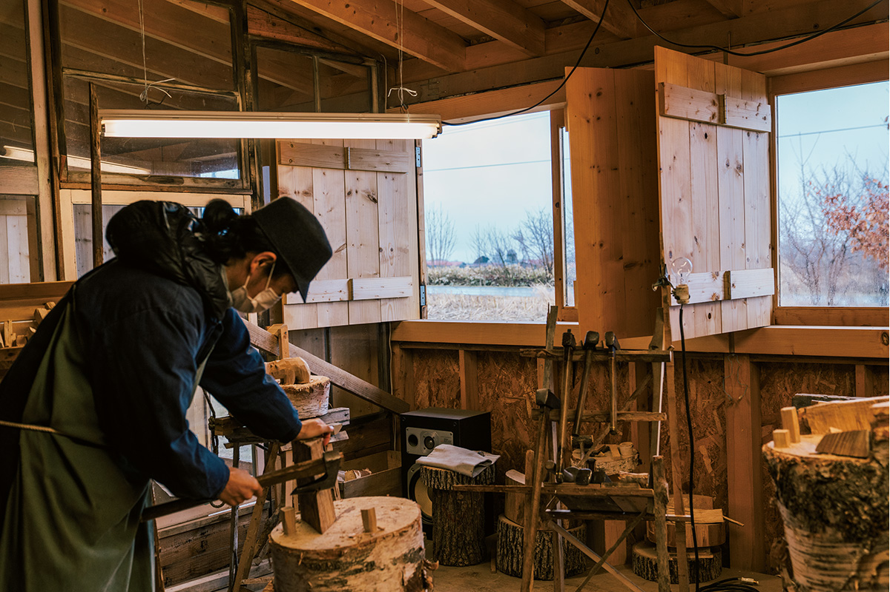
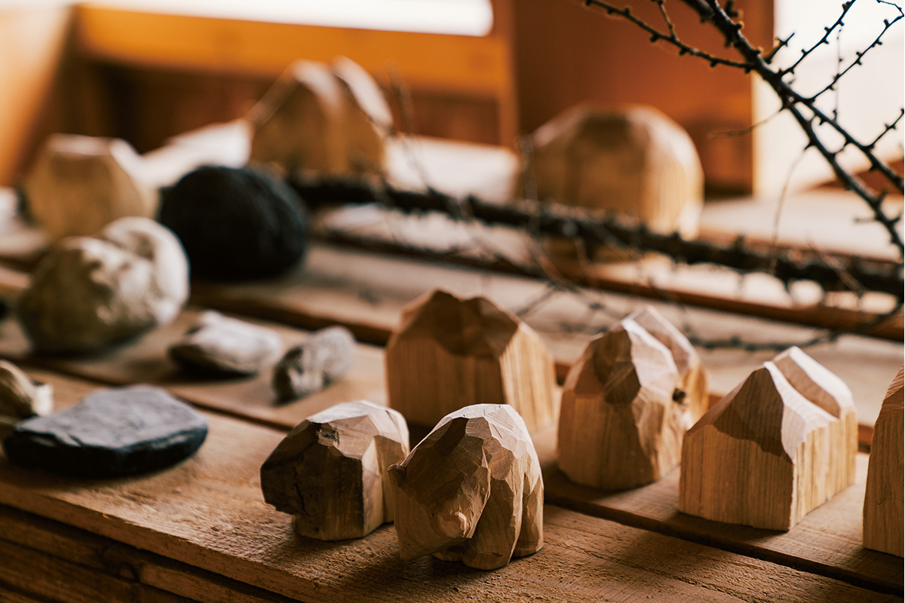
page
- Телефон
- +81 70-8947-3660
- Сайт
- page-hd.com
Отель
HOTEL NUPKA: место встречи для всего Токати
HOTEL NUPKA стоит в трёх минутах пешком от вокзала Обихиро, главного города Токати. Это перестроенное старое здание. Управляющая открыла его вместе с совладельцем с простой мыслью: сделать отель, открытый городу. Отель рассказывает о культуре Токати, а в его кафе приходят посидеть и местные жители.
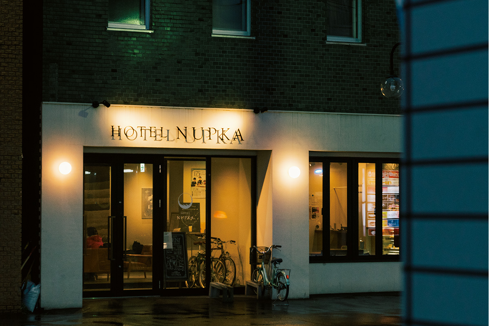
У отеля есть своё пиво, «Пиво для начала путешествия»: солод для него целиком из ячменя Токати. В нём нет тяжести, которой часто грешит крафтовое пиво: его задумали как напиток, который хочется пить снова и снова вместе с местной едой.
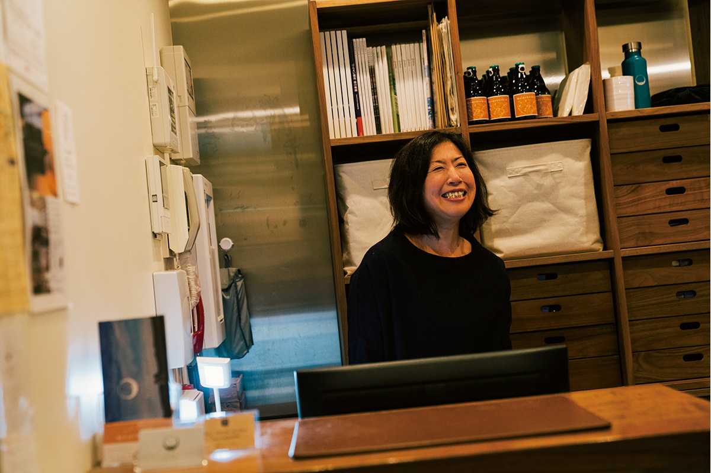
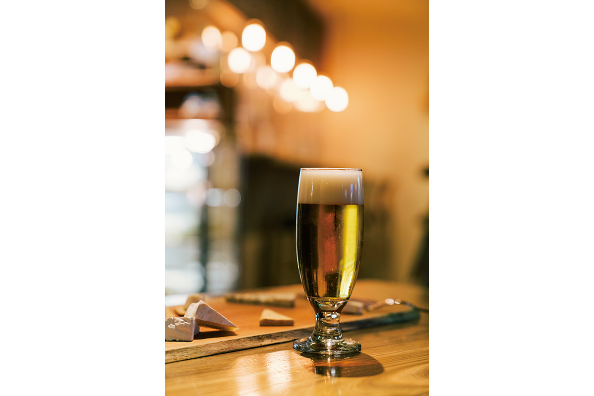
HOTEL NUPKA
- Адрес
- префектура Хоккайдо, Обихиро, Ниси-2-дзё Минами, 10-20-3
- Телефон
- +81 155-20-2600
- Часы работы
- кафе 7:00–23:00
- Цены / Вход
- за ночь без питания от 2700 иен (общий номер), от 4000 иен (отдельный номер)
- Сайт
- nupka.jp
Пекарня
toi: хлеб рядом с пшеничным полем
Пекарню toi видно, когда поднимаешься на невысокий холм за посёлком Отофукэ, к северу от Обихиро. Здесь пекут хлеб и варят конфитюры. Мука только из пшеницы естественного и органического выращивания, мелют её сами и пекут хлеб в дровяной печи.
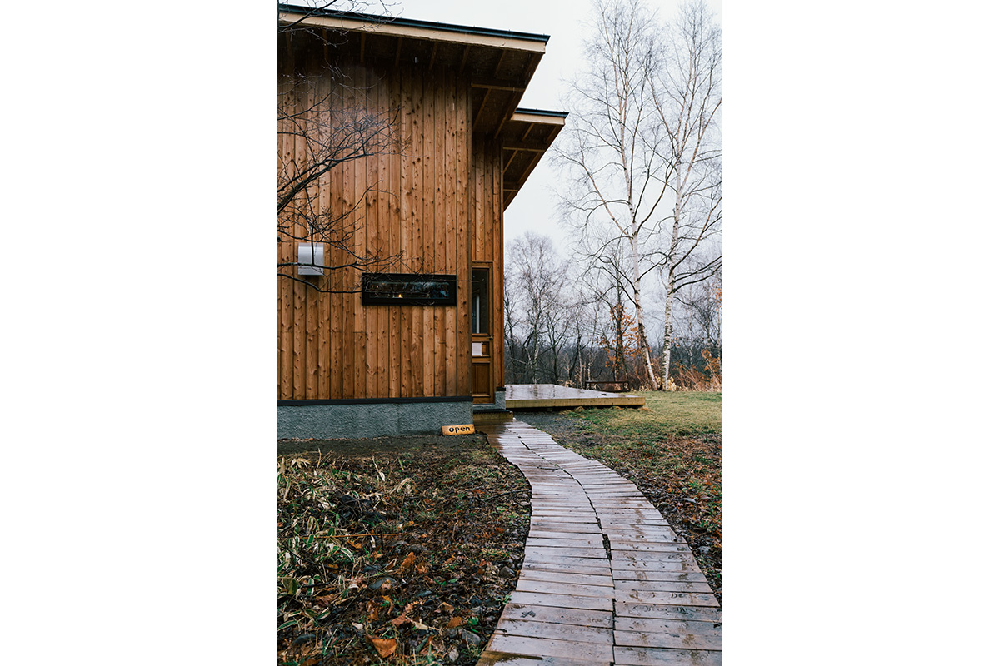
Владелец родом из Кансая. В Токати он переехал, когда открывал новую пекарню в Обихиро, а потом завёл собственную, у самого пшеничного поля. Он передаёт в хлебе заботу фермеров, которые выращивают для него надёжное сырьё, и думает о том, что в еде важно, кроме вкуса.
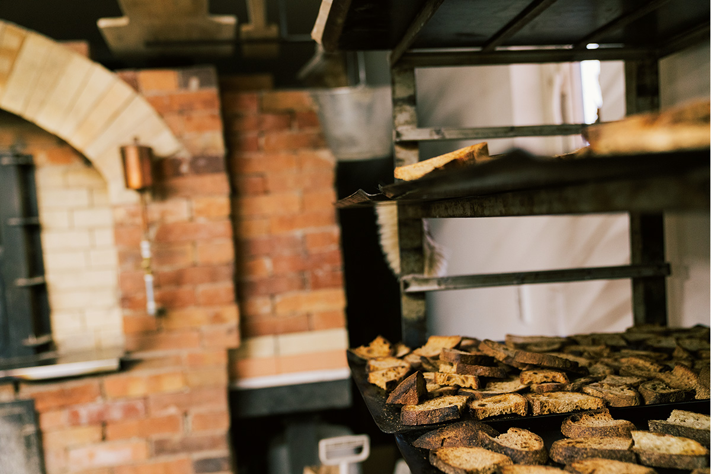
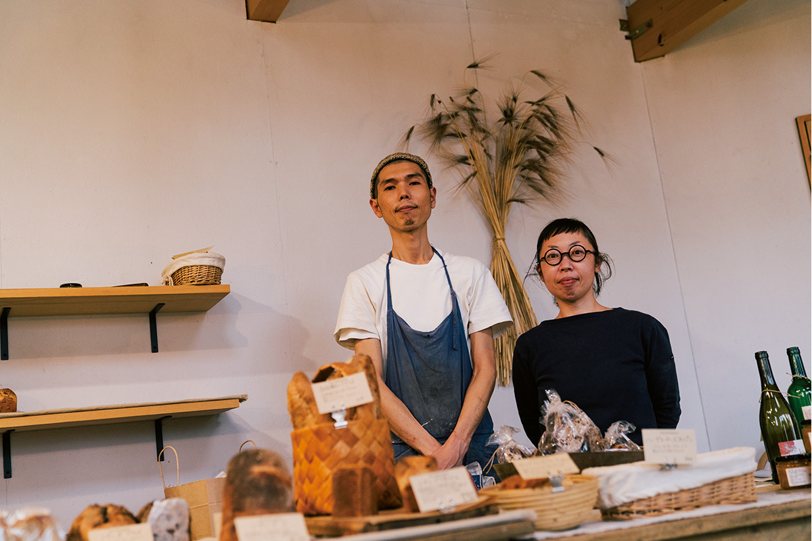
toi
- Адрес
- префектура Хоккайдо, Отофукэ, Ками-Сикарибэцу Кита 6-сэн, 23-4
- Телефон
- +81 155-32-9177
- Часы работы
- 10:00–17:00, с октября по февраль до 16:00
- Выходные
- понедельник, вторник
- Сайт
- toi-naturel.com
Онсэн
«Бансэй онсэн»: единственный в Токати онсэн с видом на море
На юго-востоке равнины Токати, в районе Бансэй посёлка Тайки, есть онсэн с редкой даже по мировым меркам водой: красно-бурой, с высоким содержанием йода. Тем, кто любит сауну, понравится площадка для отдыха на свежем воздухе с видом на Тихий океан. В ресторане «Комуги сёкудо» подают местное блюдо Тайки: рис с лососем и сыром. Полотенце дают бесплатно, так что заехать можно без подготовки, а ещё онсэн служит базой для активного отдыха на природе.
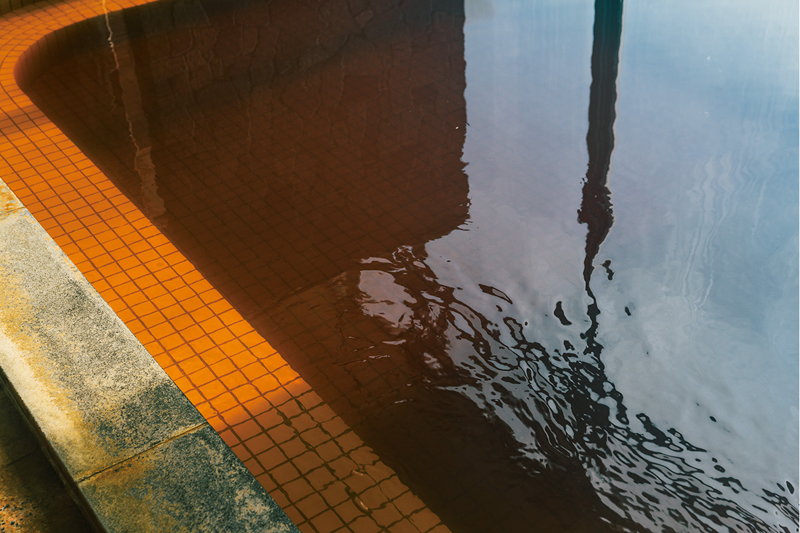
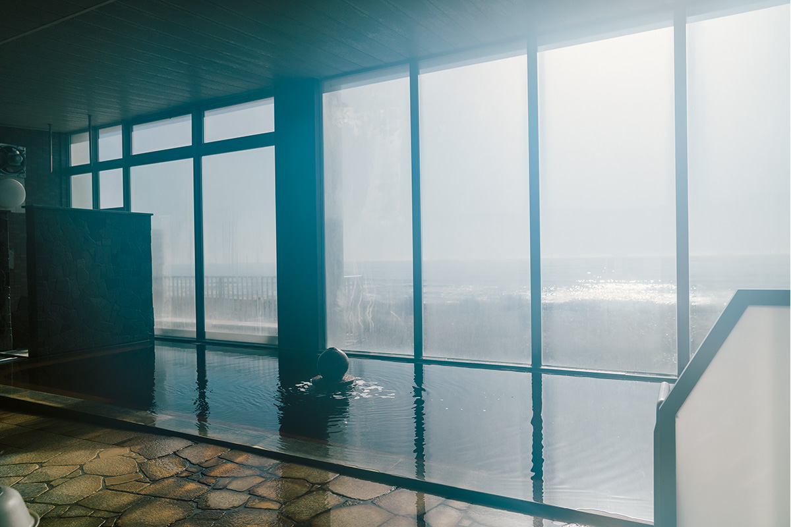
«Бансэй онсэн»
- Адрес
- префектура Хоккайдо, Тайки, Бансэй, 2
- Телефон
- +81 1558-7-8161
- Часы работы
- 8:00–21:00, с октября по март с 9:00
- Выходные
- без выходных (с октября по март вторник)
- Цены / Вход
- взрослые 500 иен
- Сайт
- bansei-onsen.jp
Вечер
Ночь на безымянном берегу
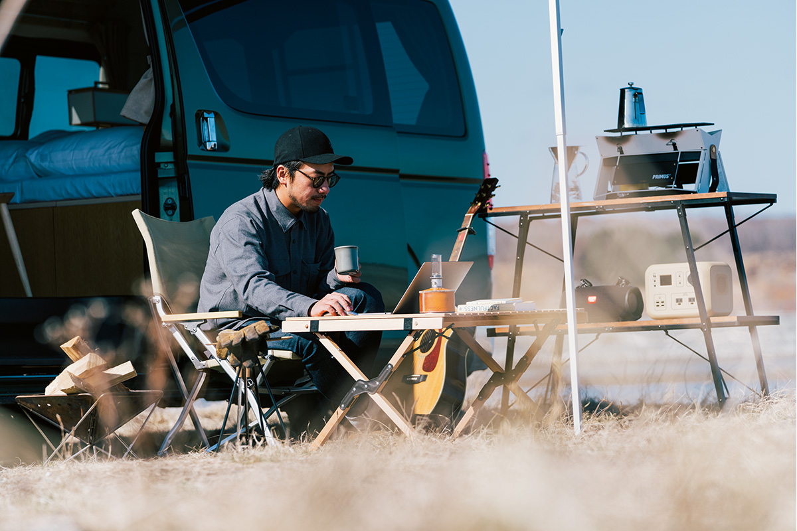
Солнце светит в глаза, небо становится мягко-оранжевым. Через час оно сядет за горы Хидака, и высыпят звёзды. Токати обычно представляют равниной до горизонта, над которой встают горы, но сегодня ночуем на безымянном берегу в посёлке Тайки, откуда весь Тихий океан как на ладони. Мы долго ехали по прямой как стрела дороге, проскочили между лесополосами от ветра, и под нами открылось спокойное море.
Костёр разводим из плавника, который принесло неизвестно откуда. На столе всё, что мы за день собрали по Токати. Если верить карте «Дорога сыров Токати», которую раздавали в HOTEL NUPKA, в округе почти 30 сыроварен. На белый хлеб из toi с приятной кислинкой кладём раклет сыроварни «Сиавасэ тидзу кобо» и слегка макаем в оливковое масло. К ужину «Пиво для начала путешествия» из HOTEL NUPKA. Вкусной еды в Токати хватает.
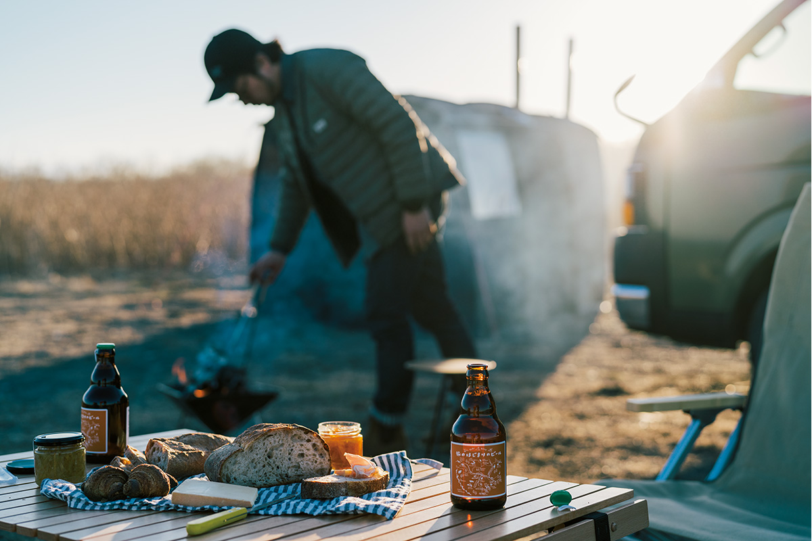
Медведи из дерева и мысль предшественников
«Мне кажется, на мои работы повлияла каждая мысль, которую накопили люди до меня»
резчик из мастерской page
История деревянных медведей Хоккайдо начинается в посёлке Якумо на юге острова. Ёсичика Токугава (1886–1976), последний глава рода Токугава из Овари, одной из ветвей правившего страной сёгунского дома, предложил местным крестьянам вырезать медведей, чтобы зарабатывать в межсезонье. В 1924 году в Якумо прошла выставка крестьянского художественного ремесла, и с тех пор медведей высоко ценят по всей стране.
Возможно, на это повлияло движение крестьянского искусства. Его начал художник и гравёр Канаэ Ямамото (1882–1946) в городе Уэда в Синсю с девизом «Дать деревне чувство искусства». По совпадению, в те же годы Мунэёси Янаги (1889–1961) и его единомышленники основали движение мингэй, народного ремесла, утверждая, что красота живёт в повседневной жизни. И тогда же писатель Кэндзи Миядзава (1896–1933) предупреждал об опасностях индустриального общества в «Очерке крестьянского искусства».
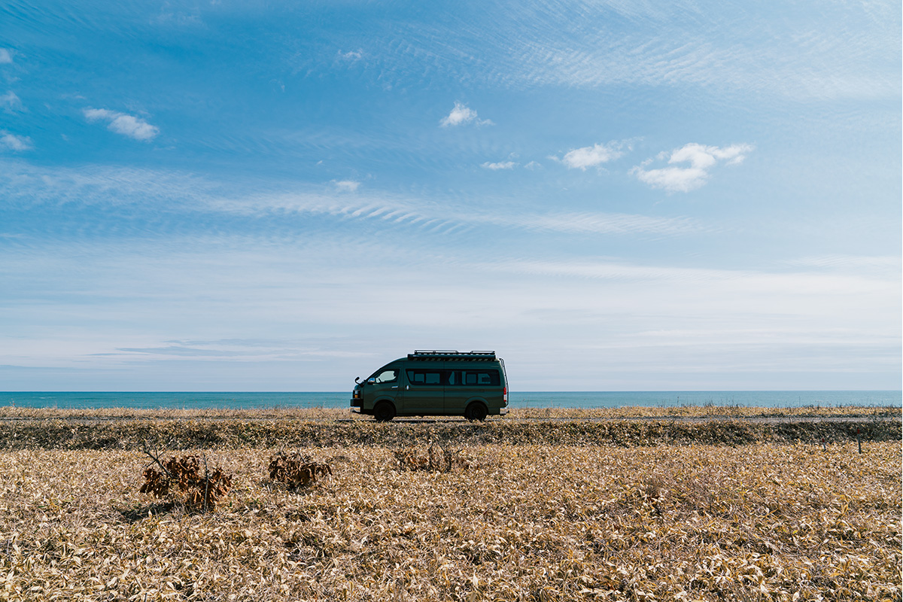
Резчик говорит, что во время работы доверяется ощущению, будто «тело движется само». Можно сказать, что им движет невидимая сила. И эта сила принадлежит не одному ему: она стоит на фундаменте истории, которую сложили предшественники. Глубина его мысли и его работ впечатлила нас ещё раз.
Освоение Токати и масло «Марусэй»
История Хоккайдо это история освоения. Бэндзо Ёда (1853–1925), которого называют «отцом освоения Токати», в 1881 году поселился на земле нынешнего Обихиро, а позже основал общество «Бансэйся» и повёл распашку внутренних районов Токати. Токати осваивали не военные поселенцы тондэнхэй, которых отправляли охранять север и поднимать земли, а частные переселенцы с Хонсю вроде «Бансэйся». Работа была невероятно тяжёлой: после нашествий саранчи и холодных лет Ёда на время оставил земли у Обихиро и перебрался на тихоокеанское побережье, в местность Ойкаманай, нынешний район Бансэй посёлка Тайки. Там он занялся скотоводством и делал масло.
Кстати, название знаменитого печенья «Марусэй бата-сандо» кондитерской Rokkatei, одной из самых известных на Хоккайдо, взято от товарного знака первого сливочного масла «Бансэйся». Иероглиф «сэй» из названия общества обвели кругом, «мару», и получилось «Марусэй». Дух первопроходцев компания хранит и сегодня.
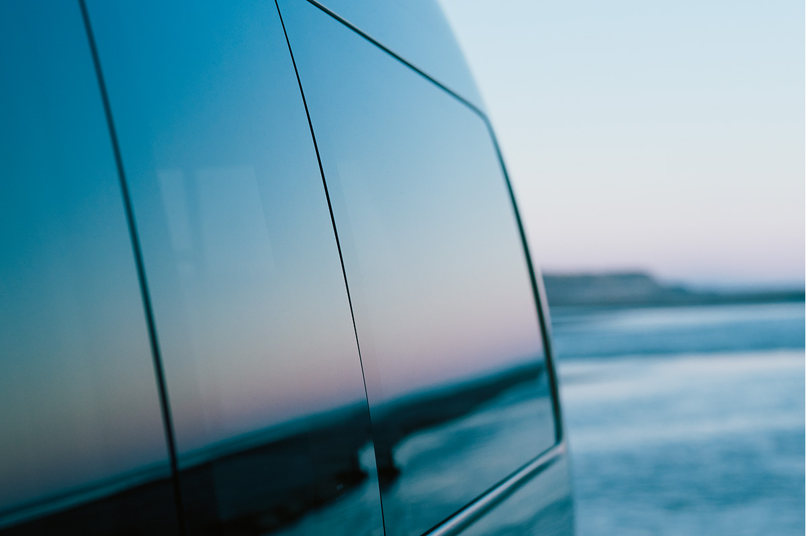
Лошади Обихиро
В эпоху освоения лошади играли огромную роль. Они расчищали нетронутый лес, пахали землю, а силу их проверяли в состязаниях, где лошадь тянула бревно. Отсюда пошли бан-эй, скачки тяжеловозов.
«Когда я была маленькой, лошадей вокруг было очень много»
управляющая HOTEL NUPKA
Сельское хозяйство давно механизировано, и работу лошадей взяли на себя тракторы. Но управляющая вместе с друзьями, которые любят лошадей, начала проект «Бася-бар»: от HOTEL NUPKA по вечернему Обихиро ездит повозка, которую тянет тяжеловоз. Так в город вернулся привычный когда-то вид с лошадьми.
Земля, которую сделали люди
Пейзаж перед глазами и щедрые дары природы появились не за один день. В пекарне toi в Отофукэ почти вся мука и остальные продукты выращены в Токати органически и без химикатов. И сама земля, на которой они растут, появилась благодаря освоению. На ней работают фермеры, их труд и надежды наслаиваются друг на друга, и всем этим мы живём.
Мы ехали по Токати за «лучшим видом» и работали в дороге. Горы Хидака в снегу, поля за окном перед посевом, море Бансэя, которое помнит первопроходцев. Природа и встреченные люди сплетаются, и за ними видна жизнь края. Такой способ путешествовать открывается только тому, кто едет на машине.
Фото: Ацуси Ямахира.